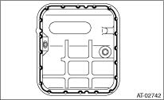
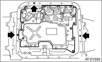

1. Check the control valve body for dust and other foreign matter.
2. Mount new control valve strainer to the control valve body.
(1) Apply ATF to the entire perimeter of the O-ring on the control valve strainer.
CAUTION:
Protect the O-ring from dust and dirt while applying ATF.
(2) Install the control valve strainer to the control valve body from the O-ring side.
CAUTION:
If the control valve strainer is pushed in at an angle, the O-ring may be damaged. Be sure to push in the control valve strainer straight to install.
(3) Tighten the three bolts.
Tightening torque:
10 N·m (1.0 kgf-m, 7.4 ft-lb)

3. Attach the magnet at the specified position of the oil pan.

4. Apply proper amount of liquid gasket to the entire oil pan mating surface.
Liquid gasket:
THREE BOND 1217B (Part No. K0877YA020) or equivalent

5. Fill the three holes aside from the bolt holes in the transmission case, with liquid gasket.
Liquid gasket:
THREE BOND 1217B (Part No. K0877YA020) or equivalent

6. Install the oil pan by equally tightening the bolts.
Tightening torque:
5 N·m (0.5 kgf-m, 3.7 ft-lb)
7. Fill ATF from the oil charge pipe.
Recommended fluid:

Capacity:
Fill with the same amount of ATF as drained.
8. Bleed the air of control valve.
9. Check the ATF level.